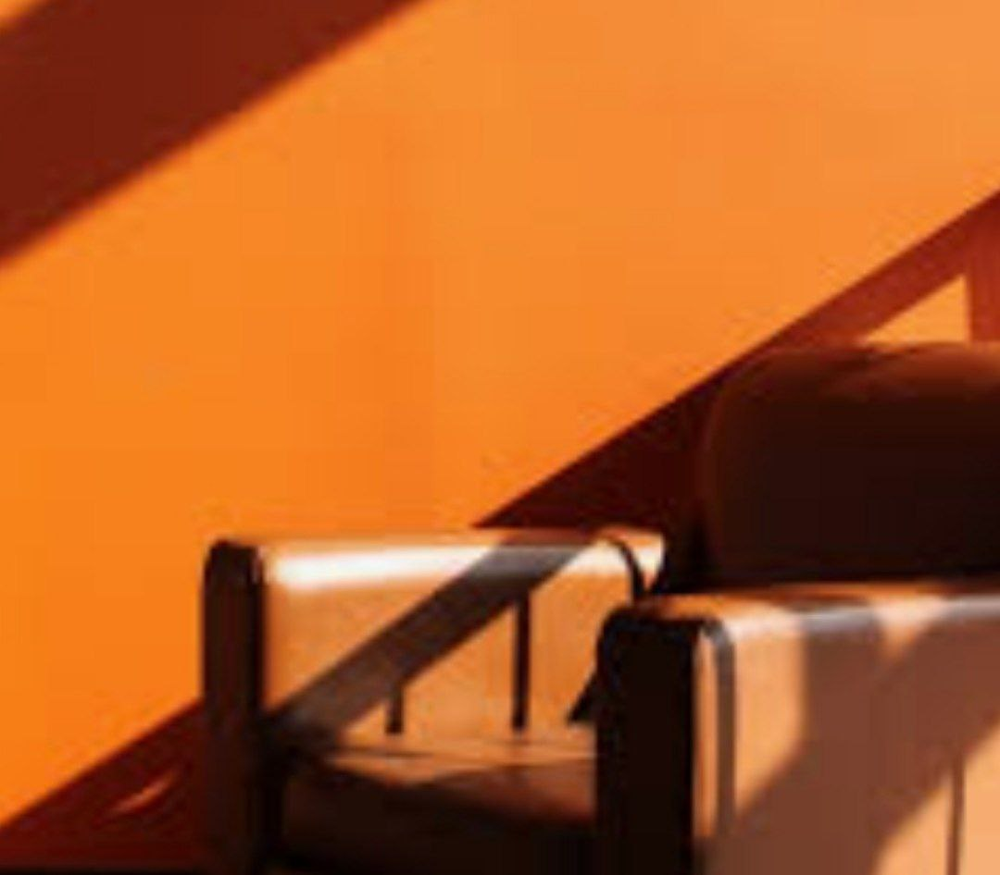
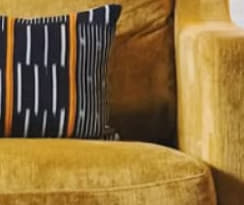
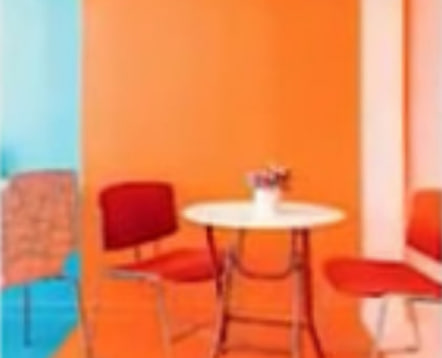

Технологии
Вещи, которые нужно знать перед стажировкой в IT сфере
Умные музыканты продолжают радовать фанатов...
Источник
Умные музыканты продолжают радовать фанатов...
Источник
Новая мода на тоновые цвета...
Источник
Технологические тренды меняют наш мир...
Источник